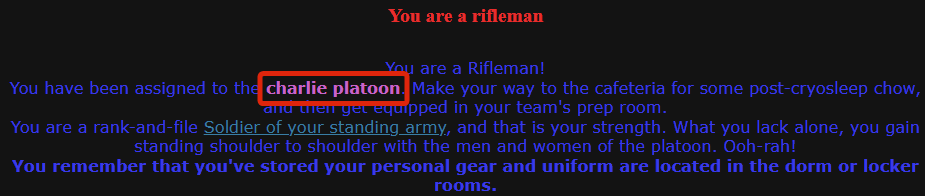
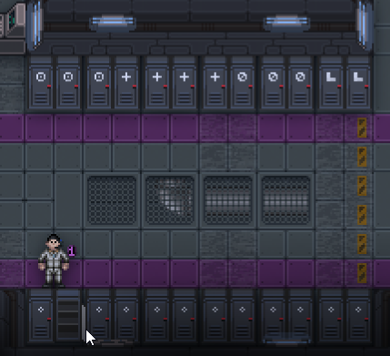
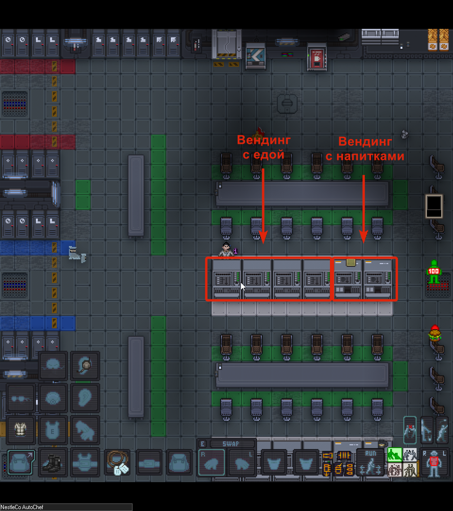
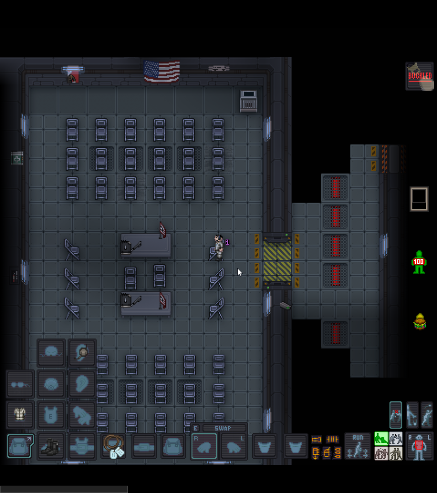

Пробуждение: Первые шаги
Игра началась. Вы просыпаетесь в криокапсуле. Прежде чем бежать воевать, нужно привести себя в порядок.
Определяем свой отряд
Первым делом посмотрите в чат. Во вступительном слове будет указан ваш отряд: Альфа Браво Чарли или Дельта.

Нажмите любую кнопку перемещения (W, A, S, D), чтобы встать из капсулы, и ищите на полу линии цвета вашего отряда.
Сборы у шкафчика
Следуйте по линиям вправо к рядам шкафчиков. Если вы выбрали роль пехотинца, ваш шкафчик находится в нижнем ряду.

- Как найти свой: Наведите мышь на шкаф — слева снизу появится имя владельца. Если не уверены, нажмите ПКМ для вызова подробного меню.
- Как открыть: Кликните по шкафу (ЛКМ) — лампочка загорится зеленым. Второй клик откроет дверцу.
Экипировка:
- Взаимодействие: Перетаскивайте вещи на персонажа с зажатой кнопкой мыши или кликайте по ним, чтобы взять в руку.
- Смена рук: Клавиша X меняет активную руку (выделена рамкой на HUD).
- Слоты: Чтобы надеть вещь, возьмите её в руку и кликните по соответствующему слоту в инвентаре.
Минимальный набор: джампсьют (форма), ботинки и наушник. Жетоны можно прицепить на надетую форму, кликнув по ней жетонами в руке.
Кафетерий и обед
После криосна персонаж голоден — об этом напоминает значок гамбургера с красной стрелкой. Пройдите направо от шкафчиков в столовую.

- Вендомат: Возьмите еду. Чтобы полностью насытиться, вам понадобится две порции.
- Как есть: Клавиша Z или клик по себе рукой с едой. Когда закончите с первым подносом, нажмите X, чтобы сменить руку.
- Как сесть: Подойдите к стулу, зажмите ЛКМ на своем персонаже и перетащите его на стул. В углу появится статус Blocked.
- Завершение: Поев, кликните на стол рядом, чтобы оставить поднос, и нажмите на иконку Blocked, либо кнопку B, чтобы встать.
Брифинг и связь
Пройдите в комнату брифинга, чтобы послушать план операции и изучить карту.

Памятка по связи и чату
Запомните основные клавиши для общения. Важно понимать разницу между игровыми (IC) и внеигровыми (OOC) чатами.
| Клавиша | Режим чата | Описание |
|---|---|---|
| T | Local | Сказать людям, стоящим рядом с вами. |
| Y | Radio | Связь по рации (слышит ваш отряд). |
| M | Me | Эмоции персонажа (например: *прищурился*, *салютует*). |
| O | OOC | Внеигровой чат на весь сервер. |
| L | LOOC | Локальный внеигровой чат (видят только те, кто рядом). |
- Каналы: Можно просмотреть список доступных каналов и переключаться между ними.
- Микрофон: Можно полностью выключить рацию или включить микрофон.
- Важно: Не рекомендую включать режим «всегда активен».
Использование тэгов рации
Если вы пишете в обычный игровой чат (T), вы можете отправить сообщение в конкретный радиоканал, используя специальный код (тэг). После тэга обязательно ставьте пробел!
- Как это работает:
:тэг Сообщение - Пример:
:g Привет всем!— ваше сообщение уйдет в публичный канал корабля. - Кириллица: Система понимает и русские буквы (например,
:п Привет всем!).
Путь в Арсенал
После брифинга идите по цветовым индикаторам вверх и вправо к арсеналу вашего отряда. Как только Командир отделения откроет двери — начнется самое интересное.